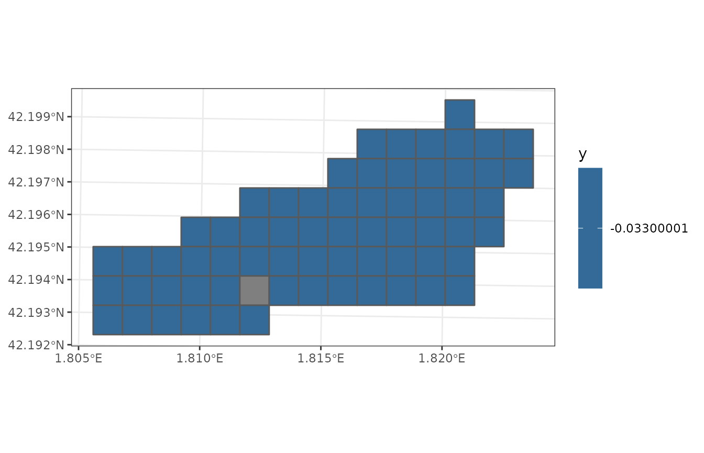

Landscape water balance
Miquel De Caceres
2021-12-23
LandscapeWaterBalance.RmdSimulations on a set of forest stands
Package medfate include functions spwb() or growth() to simulate soil water balance on a single forest stand. This section describes how to run simulations on a set of forest stands in one call. This is done using functions spwbpoints(), spwbpixels(), spwbgrid() and the corresponding growth functions.
As an example, we will use function spwbpoints(), which simulates soil plant water balance on forests distributed in particular locations. The function takes an object of class SpatialPointsLandscape as input. We begin by loading an example dataset of 30 forest stands:
As before, we need meteorological data, species parameters and control parameters (which will apply to all forest stands):
data("examplemeteo")
data("SpParamsMED")
control = defaultControl()
control$verbose = FALSEThe call to spwbpoints() can be done as follows (here we restrict the dates for simplicity):
dates = seq(as.Date("2001-03-01"), as.Date("2001-03-15"), by="day")
res <- spwbpoints(examplepointslandscape, SpParamsMED, examplemeteo,
dates = dates, control = control, progress = FALSE)Function spwbpoints() first initializes model inputs by calling forest2spwbInput() for each forest stand described in the SpatialPointsLandscape object. Then it calls function spwb() for each forest stand and stores the result. The fact that we used examplemeteo as meteorological input involves that the same weather was applied to all forest stands, but different weather could have been specified for each one (see documentation of function spwbpoints()).
The result of calling spwbpoints() is a list (whose class name is the same as the function name) with the following elements:
names(res)## [1] "coords" "bbox" "proj4string" "xlist" "resultlist"
## [6] "summarylist"Apart from those elements describing spatial information, vector xlist contains the spwbInput corresponding to each forest stand, and vector reslist contains the output of spwb() function for each forest stand (i.e. elements of reslist are objects of an S3 class with the same name). This structure of the output of spwbpoints() allows querying information for the simulation of any particular forest stand. For example, if we want a monthly summary of water balance for the first stand, we can use function summary.spwb() from package medfate:
summary(res$reslist[[1]], freq="months",FUN=sum,
output="WaterBalance")## Length Class Mode
## 0 NULL NULLIf one needs to save memory, it is possible with spwbpoints() to generate summaries automatically after the simulation of soil water balance of each stand, and storing those summaries instead of all the output of spwb(). For example the following code will produce the same output as before:
res <- spwbpoints(examplepointslandscape, SpParamsMED, examplemeteo,
dates = dates, control = control, progress = FALSE,
summaryFunction = summary.spwb)
res$reslist[[1]]## NULLSimulation of watershed hydrology
Simulation of watershed hydrology involves describing a watershed in a gridded mode and simulating soil water balance water while including additional compartments and hydrological processes, such as routing runoff from one cell to the other. To illustrate this kind of simulation, which is carried out using function spwbland(), we first load a small example watershed included with the package:

As for the call to function spwbpoints() we will use the same weather (i.e. examplemeteo) across the watershed. To speed up calculations we call function spwbland() for a single month.
dates = seq(as.Date("2001-01-01"), as.Date("2001-01-31"), by="day")
res = spwbland(examplewatershed, SpParamsMED, examplemeteo, dates = dates, summaryFreq = "month")##
## ------------ spwbland ------------
## Grid cells: 66, patchsize: 10000 m2, area: 66 ha
## Cell land use wildland: 48 agriculture: 17 artificial: 0 rock: 1 water: 0
## Cells with soil: 65
## Meteorological input class: data.frame
## Number of days to simulate: 31
## Number of summaries: 1
## Number of outlet cells: 1
##
## Preparing spwb input:
##
|
| | 0%
|
|= | 2%
|
|== | 3%
|
|=== | 5%
|
|==== | 6%
|
|===== | 8%
|
|====== | 9%
|
|======= | 11%
|
|======== | 12%
|
|========== | 14%
|
|=========== | 15%
|
|============ | 17%
|
|============= | 18%
|
|============== | 20%
|
|=============== | 21%
|
|================ | 23%
|
|================= | 24%
|
|================== | 26%
|
|=================== | 27%
|
|==================== | 29%
|
|===================== | 30%
|
|====================== | 32%
|
|======================= | 33%
|
|======================== | 35%
|
|========================= | 36%
|
|=========================== | 38%
|
|============================ | 39%
|
|============================= | 41%
|
|============================== | 42%
|
|=============================== | 44%
|
|================================ | 45%
|
|================================= | 47%
|
|================================== | 48%
|
|=================================== | 50%
|
|==================================== | 52%
|
|===================================== | 53%
|
|====================================== | 55%
|
|======================================= | 56%
|
|======================================== | 58%
|
|========================================= | 59%
|
|========================================== | 61%
|
|=========================================== | 62%
|
|============================================= | 64%
|
|============================================== | 65%
|
|=============================================== | 67%
|
|================================================ | 68%
|
|================================================= | 70%
|
|================================================== | 71%
|
|=================================================== | 73%
|
|==================================================== | 74%
|
|===================================================== | 76%
|
|====================================================== | 77%
|
|======================================================= | 79%
|
|======================================================== | 80%
|
|========================================================= | 82%
|
|========================================================== | 83%
|
|=========================================================== | 85%
|
|============================================================ | 86%
|
|============================================================== | 88%
|
|=============================================================== | 89%
|
|================================================================ | 91%
|
|================================================================= | 92%
|
|================================================================== | 94%
|
|=================================================================== | 95%
|
|==================================================================== | 97%
|
|===================================================================== | 98%
|
|======================================================================| 100%
##
## Initial average soil water content (mm): 530.8
## Initial average snowpack water content (mm): 0
## Initial average aquifer water content (mm): 0
## Initial watershed water content (mm): 522.76
##
## Performing daily simulations:
## .+++++.+++++.+++++.+++++.+++++.+++++.+++++.+++++.+++++.+++++.+++++.+++++.+++++.+++++.+++++.+++++.+++++.+++++.+++++.+++++.+++++.+++++.+++++.+++++.+++++.+++++.+++++.+++++.+++++.+++++.+++++done
##
## Final average soil water content (mm): 530.8
## Final average snowpack water content (mm): 0
## Final average aquifer water content (mm): 56.53
## Final watershed water content (mm): 579.29
##
## Change in snowpack water content (mm): 0
## Snowpack water balance result (mm): 0
## Snowpack water balance components:
## Snow fall (mm) 9.77 Snow melt (mm) 9.77
##
## Change in soil water content (mm): 0
## Soil water balance result (mm): -0.68
## Soil water balance components:
## Net rainfall (mm) 58.25 Snow melt (mm) 9.77
## Runon (mm) 1.15 Runoff (mm) 0
## Subsurface input (mm) 0 Subsurface output (mm) 0
## Deep drainage (mm) 57.4 Aquifer discharge (mm) 0
## Soil evaporation (mm) 8.7 Plant transpiration (mm) 3.75
##
## Change in aquifer water content (mm): 56.53
## Aquifer water balance result (mm): 56.53
## Aquifer water balance components:
## Deep drainage (mm) 56.53 Aquifer discharge (mm) 0
##
## Change in watershed water content (mm): 56.53
## Watershed water balance result (mm): 55.86
## Watershed water balance components:
## Precipitation (mm) 74.75
## Interception (mm) 6.63 Soil evaporation (mm) 8.57 Plant Transpiration (mm) 3.7
## Export (mm) 0
## Watershed lateral flows:
## Subsurface flow (mm) 0
## Groundwater flow (mm) 14.51
##
## ------------ spwbland ------------Although simulations are performed using daily temporal steps, parameter summaryFreq allows storing results at coarser temporal scales, to reduce the amount of memory in spatial results. Several plots can be drawn from the result of function spwbland(). As an example we display a map of average soil water potential for the simulated month.
plot(res, "Psi1")